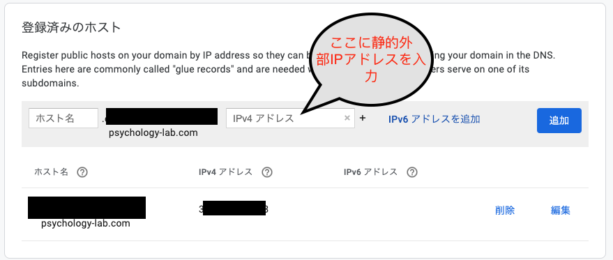
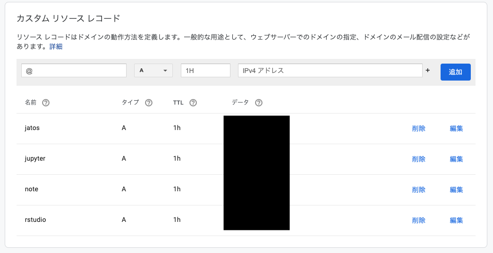

Docker-composeを使ってGCE上のRstudio serverをHTTPS化する方法では，Google Compute Engine上でRocker(RStudio ServerのDocker)をベースにしたDockerでRStudio Serverを使う場合にHTTPS化する方法を解説しています。この場合，１つのサーバーにはRStudio serverしかおけないので，ちょっと不便です。もちろん，手動でいろいろやればできるのですが，毎回だと面倒です。そこで，サブドメインとdocker-composeとtraefikを活用して，一気に複数のサービス(Rstudio, Jupyter notebook, JATOS（ウェブ実験管理）, elabFTW（電子ラボノート）)を1つのサーバーで動かして，HTTPS化してみましょう（１サービス１サーバーだと４つ立ち上げることで負担ですが，これだと１つサーバーで４サーボスが稼働できるので，お得です！）。
なお，国里は，サーバーに関して専門的な教育を受けたことはないので，間違っている部分も多いかと思います（雰囲気で動かしています）。本ページを参考に作業された結果，何らかの問題が生じた場合に，国里は責任を負えません。予めご了承ください（Google Compute Engineを使用すると課金されますので，慎重に作業ください。例えば何度もVMインスタンスを作成し，それを稼働したまま放置していたら，結構な金額になると思います）。また，お詳しい方は，誤りを見つけられましたら，ご指摘いただけましたら幸いです。
公式のドキュメントなどを参考にGoogle Compute Engineを使えるように設定します（これは解説資料も多いので省略します）。
1.名前やマシンの構成は好みで選択してください（マシンの構成によって金額が変わるので，お財布と相談ください）。ブートディスクの設定で変更を押して，Ubuntu 20.04 LTSを選んで，ディスクサイズは30~50GBくらいにしておきます。
2.ファイヤーウォールの設定(「HTTP トラフィックを許可する」と「HTTPS トラフィックを許可する」にチェックをいれる)
※ よく使う仮想マシン構成が決まっている場合は，インスタンステンプレートを使うと便利と思います。
3.VMインスタンスを作成します。勝手に作ったVMが起動します。
4.VMインスタンスは起動している間課金されるので，使わないときは停止しておきます。でも，VMインスタンスは起動のたびに外部IPが変わっちゃうのが困る場合は，静的外部 IP アドレスの予約をします（常時起動している場合は，気にしなくても良いと思います）。
5.このまま稼働させると，sshdに攻撃がされます（結構頻繁にアタックされます・・・(;´Д`;)）。SSHポート番号を変更しておきます。ちょっとややこしいですが，以下の手順でSSHポートは変更できます。
1000にして，トラフィックの方向は上り，一致した時のアクションは許可，ソースのIP範囲は， 0.0.0.0/0 とします。プロトコルはtcpでポートに好きなポート番号を入れます。sudo vim /etc/ssh/sshd_configバンっと画面に文字が出てきてビビるかもしれませんが，落ち着いて，# Port 22を探して，iをタイプします（文字が挿入できるようになります）。#をはずして，22の代わりに自分が使いたいポート番号を入れます(Port 自分の使いたい番号)。入力ができたら，escキーをタイプしてから，:wqとタイプします（保存されます）。
sshdの設定を反映させるために，以下のコマンドで再起動させます。
sudo systemctl restart sshdここで今22番portで開いた画面はそのままにして（閉じない），VMインスタンスの右端にある「SSH」の下矢印を押して，「ブラウザウィンドウでカスタムポートを開く」をクリックします。入力欄が出てくるので，そこに先程設定した新しいSSHのポートを入力して開きます。
新しいSSHのポートでも開けたら，22番portを閉じます。もう一度，「VPCネットワーク」→「ファイヤーウォールルール」で「ファイアウォール ルールの作成」を押します。名前やターゲットタグは好きな名前にしてください（私は適当に“disallow-ssh22”って名前にしています)。優先度は1000にして，トラフィックの方向は上り，一致した時のアクションは拒否，ソースのIP範囲は， 0.0.0.0/0 とします。プロトコルはtcpでポートは22にします。
VMインスタンスをクリックして，「編集」を押し，ネットワークタグに上記で決めたターゲットタグを入れて保存します(これで，httpのタグ，httpsのタグ，新しいsshポートのタグ，22番ポートを閉じるタグの４つがあると思います)。
通常のSSH接続(22番ポート)をしても接続できず，「ブラウザウィンドウでカスタムポートを開く」で自分で設定したSSHポートを使って接続できたら成功です。
ちなみに，SSH接続後に以下を入力するとアクセス状況を見れます（fで次の画面に進んで，qで閉じます）。
sudo less /var/log/auth.log色々とサービスがありますが，私はGoogleのDomainサービスを使いました。少々お金はかかりますが（私の場合は年1400円でした）以下で必要になるます。ドメイン名はお好きなものを設定ください。ドメイン名が入手できたら，以下のように静的外部IPを使ってDNSの登録をします。

次に，サブドメインの設定をします。例えば，私がyoshihiko-kunisato-lab.comって名前のドメインを取得したら，その前に任意の文字を追加してサブドメインとして使えます。例えば，rstudio.yoshihiko-kunisato-lab.comって感じです。それをカスタムリソースレコード（Google domainの場合は）で設定します。＠のところに，rstudioって打ち込んで，IPv4アドレスってところに，上記の静的外部IPをいれて追加します。jupyter, note, jatosも同様に追加します。

Compute EngineのページのVMインスタンスをみると先程設定したVMインスタンスがあると思います。こちらが起動していると接続というところの「SSH」がクリック可能になっていると思います。SSHをクリックしてください。すると，別ウィンドウが起動して，ターミナルが出現します。そこで，こちらを参考に以下を打ち込んでDockerをインストールします。途中何か聞かれると思いますが，質問に従って，Yなどの返事をタイプください。
sudo apt updatesudo apt install \
apt-transport-https \
ca-certificates \
curl \
gnupg-agent \
software-properties-commoncurl -fsSL https://download.docker.com/linux/ubuntu/gpg | sudo apt-key add -sudo apt-key fingerprint 0EBFCD88sudo add-apt-repository \
"deb [arch=amd64] https://download.docker.com/linux/ubuntu \
$(lsb_release -cs) \
stable"sudo apt install docker-ce docker-ce-cli containerd.io続けて，こちらを参考にして，Docker-composeもインストールします。
sudo curl -L "https://github.com/docker/compose/releases/download/1.24.0-rc1/docker-compose-$(uname -s)-$(uname -m)" -o /usr/local/bin/docker-compose
sudo chmod +x /usr/local/bin/docker-compose
sudo ln -s /usr/local/bin/docker-compose /usr/bin/docker-composeこれで，Dockerを動かす準備ができました。
DockerやDocker-composeについては解説をしませんので，さくらナレッジのDocker入門や「Docker/Kubernetes 実践コンテナ開発入門」などで別途学習をされると良いかと思います。今回は，docker-composeを使います。これは，複数のDockerを使う場合に，それらの構成をyamlで定義して，それを元にしてDockerを用意するサービスです。以下では，Https化を実現するリバースプロキシ＆ロードバランサ用Traefikの導入と４つのサービスス(Rstudio, Jupyter notebook, JATOS, elabFTW)の導入に分けて説明をします（これは同時にやれますが，Traefikを単独で立ち上げて，あとからサービスの追加・削除ができたほうが便利なので分けています）。
まず，以下をターミナルで実行します。１行目でdocker-composeで使うサーバー外につながるネットワークを用意します。２〜３行目でtraefik用フォルダと設定ファイルを作成します。４行目で，あとで，SSL暗号化の内容を書込み可能なように設定します。
sudo docker network create proxy
sudo mkdir -p /opt/traefik
sudo touch /opt/traefik/{traefik.toml,docker-compose.yml,acme.json}
sudo chmod 0600 /opt/traefik/acme.jsontraefik用のdocker-composeファイルを設定します。以下のコマンドをターミナルに打ち込みます。なんか画面が出てきますが，ほぼ空欄になっていると思います。
sudo vim /opt/traefik/docker-compose.ymlそこで，以下をコピペして貼り付けします。それから，escキーをタイプしてから，:wqとタイプします（保存されます）。
version: '2'
networks:
proxy:
external: true
internal:
external: false
services:
traefik:
image: traefik:v1.7.18
command: --docker
ports:
- 80:80
- 443:443
networks:
- proxy
volumes:
- /var/run/docker.sock:/var/run/docker.sock
- /opt/traefik/traefik.toml:/traefik.toml
- /opt/traefik/acme.json:/acme.json
container_name: traefik
restart: always次にtraefik用のtomlファイルを設定します。以下のコマンドをターミナルに打ち込みます。なんか画面が出てきますが，ほぼ空欄になっていると思います。
sudo vim /opt/traefik/traefik.tomlそこで，以下の内容を一部改変して，コピペして貼り付けします（改変はご自身のエディタですると楽かなと思います）。改変は，(1)[docker]ってところのdomainをご自身のドメイン名に変更する(上記の例だとyoshihiko-kunisato-lab.comです)，(2)[acme]ってところのemailをご自身のメールアドレスにしてください。改変した内容をコピペできたら，escキーをタイプして，:wqとタイプします（保存されます）。
defaultEntryPoints = ["https","http"]
[entryPoints]
[entryPoints.http]
address = ":80"
[entryPoints.http.redirect]
entryPoint = "https"
[entryPoints.https]
address = ":443"
[entryPoints.https.tls]
[retry]
[docker]
endpoint = "unix:///var/run/docker.sock"
domain = "ドメイン名"
watch = true
exposedByDefault = false
[acme]
email = "メールアドレス"
entryPoint = "https"
storage = "acme.json"
caServer = "https://acme-v02.api.letsencrypt.org/directory"
onHostRule = true
[acme.httpChallenge]
entryPoint = "http"では，設定した内容を元にして，traefikを起動してみます。docker-compose upをするわけですが，設定ファイルを/opt/traefik/においていますので，以下のようにします。しばらくして，doneって出てきたら成功です。
sudo docker-compose -f /opt/traefik/docker-compose.yml up -dでは，rstuio, jupyter notebook, JATOS, elabFTWの準備をしてきましょう。上記で設定したproxyという名前のネットワークを使って，traefikと各種サービスをつなげていきます。サーバーの外からHTTPS接続でtraefik経由でやりとりをします。traefikの便利なところは，上の方のやり方でtraefikを設定しておくと，後からサーバー上で動かすサービスの追加と削除ができることです。今回は，以下の４つのサービスを稼働させます。
まずは，テキストエディタに以下の内容を貼り付けて，“docker-compose.yml”という名前をつけて保存します(必ず，“docker-compose.yml”という名前にしてください)。次に，以下の変更を加えていきます。
なお，elabftwとmysqlのDB_PASSWORD，SECRET_KEY，MYSQL_ROOT_PASSWORD，MYSQL_PASSWORDの設定は，curl -sL -o docker-compose.yml "https://get.elabftw.net/?config"をローカルのターミナルで実行すると自動で設定したものが得られます（自動だと嫌な場合はご自身で設定ようにと記載されていました）。
version: '3'
networks:
proxy:
external: true
internal:
external: false
services:
jatos:
image: jatos/jatos:latest
networks:
- internal
- proxy
container_name: jatos
volumes:
- ./jatos:/opt/docker/study_assets_root/
restart: always
labels:
- traefik.docker.network=proxy
- traefik.enable=true
- traefik.frontend.rule=Host:jatos.ドメイン名
- traefik.port=9000
- traefik.protocol=http
rstudio:
image: ykunisato/paper-r:3.6.3
networks:
- proxy
container_name: rstudio
restart: always
environment:
- USER=ユーザー名
- PASSWORD=パスワード
volumes:
- ./rstudio:/home
labels:
- traefik.docker.network=proxy
- traefik.enable=true
- traefik.frontend.rule=Host:rstudio.ドメイン名
- traefik.port=8787
- traefik.protocol=http
jupyter:
image: ykunisato/ccp-lab-j:b90cce83f37b
networks:
- proxy
container_name: jupyter
restart: always
environment:
- JUPYTER_ENABLE_LAB=yes
volumes:
- ./jupyter:/home/jovyan/work
command: start-notebook.sh --NotebookApp.token='パスワード'
labels:
- traefik.docker.network=proxy
- traefik.enable=true
- traefik.frontend.rule=Host:jupyter.ドメイン名
- traefik.port=8888
- traefik.protocol=http
elabftw:
image: elabftw/elabimg:latest
networks:
- proxy
- internal
container_name: elabftw
restart: always
cap_drop:
- SYS_ADMIN
- AUDIT_WRITE
- MKNOD
- SYS_CHROOT
- SETFCAP
- NET_RAW
- SYS_PTRACE
environment:
- DB_HOST=mysql
- DB_PORT=3306
- DB_NAME=elabftw
- DB_USER=elabftw
- DB_PASSWORD=パスワード（DB)
- SECRET_KEY=シークレットキー
- SERVER_NAME=localhost
- DISABLE_HTTPS=true
- ENABLE_LETSENCRYPT=false
- MAX_PHP_MEMORY=256M
- MAX_UPLOAD_SIZE=100M
- PHP_TIMEZONE=Asia/Tokyo
- TZ=Asia/Tokyo
- SET_REAL_IP=false
- PHP_MAX_CHILDREN=50
- PHP_MAX_EXECUTION_TIME=120
- USE_REDIS=false
- ENABLE_IPV6=false
volumes:
- ./elabftw/uploads:/elabftw/uploads
labels:
- traefik.docker.network=proxy
- traefik.enable=true
- traefik.frontend.rule=Host:note.ドメイン名
- traefik.port=443
- traefik.protocol=http
mysql:
image: mysql:5.7
networks:
- proxy
- internal
container_name: mysql
restart: always
cap_drop:
- AUDIT_WRITE
- MKNOD
- SYS_CHROOT
- SETFCAP
- NET_RAW
environment:
- MYSQL_ROOT_PASSWORD=パスワード(root)
- MYSQL_DATABASE=elabftw
- MYSQL_USER=elabftw
- MYSQL_PASSWORD=パスワード（DB)
- TZ=Asia/Tokyo
volumes:
- ./elabftw/mysql:/var/lib/mysql
labels:
- traefik.port=3306上記で設定したdocker-compose.ymlを実行するために，VMインスタンスにSSH接続します。ウィンドウの右上の設定っぽいボタンをクリックするとアップロードの選択肢がでてくると思うので，それを使って，さきほどの“docker-compose.yml”をアップロードします。それができたら，以下を打ち込んで，docker-compose.ymlを実行します。ダウンロードとかあるので時間がかかることがあります。しばらくして，各サービースのコンテナがdoneって表示されたら，成功です。
sudo docker-compose up -d最後に，elbFTWを起動します（これをしないとelabFTWは動きません）。
sudo docker exec -it elabftw bin/install startブラウザに以下のURLを打ち込んでいって，動作確認をします。jatosはIDがadmin，パスワードがadminになっているので，ログインできたらすぐにadminのパスワードを変更ください。note(elabFTW)は，最初にログインしたユーザーがアドミンになるので，動作確認と同時に登録をなさってください。
docker-compose.ymlで設定した以外のユーザーを追加する場合は，VMインスタンスにSSH接続した上で，Dockerコンテナに接続してユーザーアカウントを作ります。まず，以下のコマンドで，Dockerコンテナにssh接続します。
sudo docker exec -it rstudio bash次に，以下のコマンドで新規ユーザー登録します。パスワードを聞かれるので打ち込んで，あとはエンターキーやYをタイプします。
sudo adduser 新規ユーザー名このままだと，各ユーザーが自由にRパッケージをいれられないので，以下のコマンドで，ユーザーをstaffグループにします。
sudo usermod -a -G staff ユーザー名なお，root権限で全てのユーザーにRパッケージをいれたい場合は，Dockerコンテナに接続した状態で，以下のコマンドでRを起動してパッケージをインストールすれば，全ユーザーに当該パッケージがインストールされます。
sudo R終わったら，以下を打ち込んで，Dockerコンテナへの接続をやめます。
exitもし，ユーザーをそのユーザーのフォルダごと削除したくなったら，以下を打ち込みます。
userdel -r ユーザ名上記の方法でもユーザーは追加できますが，人数が多くなると途方にくれてしまいます。そこで，以下ではnewusersを使った一括登録をします。まずは，以下のような感じの情報を表計算ソフトにいれます。ユーザーごとに変更が必要なのは，ユーザー名，ユーザーID（1001から連番にするので良いと思います），パスワード，ホームディレクトリ名（homeの下にユーザー名をいれる）です。残りの，グループID（50）, フルネーム（空白），ログインシェル（/bin/sh)は全員同じで問題ありません。
| ユーザー名 | パスワード | ユーザーID | グループID | フルネーム | ホームディレクトリ | ログインシェル |
|---|---|---|---|---|---|---|
| user1 | user1のパスワード | 1001 | 50 | /home/user1 | /bin/sh | |
| user2 | user2のパスワード | 1002 | 50 | /home/user2 | /bin/sh | |
| user3 | user3のパスワード | 1003 | 50 | /home/user3 | /bin/sh |
なお，上記の情報は，区切りに:を使って保存します。つまりuser1については，user1:user1のパスワード:1001:50::/home/user1:/bin/shになります。この作業はいろいろな方法ができますが，上記の情報を表計算ソフトにいれて，それをcsvファイルで出力して，テキストエディタで開いて，カンマを:に変換して，一番上のヘッダー情報は削除して，最後に.txtの拡張子で保存するのが楽じゃないかなと思います。そのファイル名は，user.txtとしておきます（なんでもいいです）。
user.txtが作成できたら，VMにSSH接続して，user.txtをアップロードします（ウィンドウの右上の設定っぽいボタンをクリックするとアップロードの選択肢がでてきます）。アップロードしたuser.txtをrstudioのフォルダに一時的に移動します。
sudo mv user.txt rstudiorsutdioのコンテナに入ります。
sudo docker exec -it rstudio bash以下を実行して，一括でユーザー登録します。これで終わりです。
newusers /home/user.txt一応,user.txtを削除してから，コンテナから出ます。
rm /home/user.txt
exit各コンテナのフォルダを圧縮して，Google Storageに保存する（gsutilの導入が必要です）。
sudo tar czf backup.tar.gz rstudio jatos jupyter elabftw
sudo gsutil cp ./backup.tar.gz gs://バケット名/`TZ=Asia/Tokyo date "+%Y_%m%d_%H%M_%S"`/
sudo rm backup.tar.gz